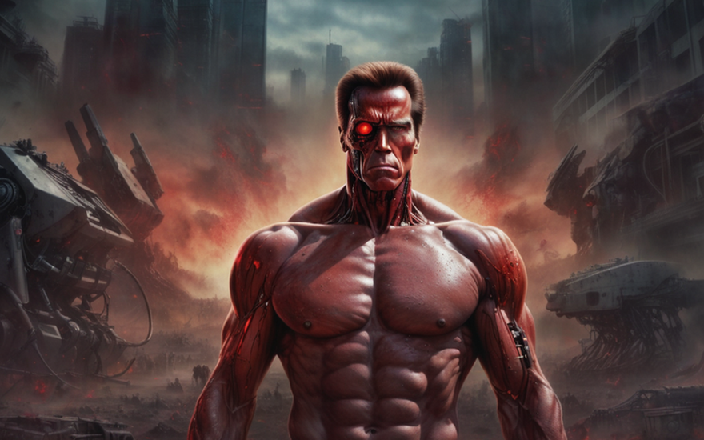
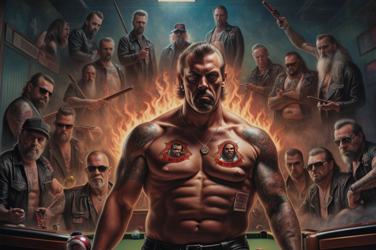
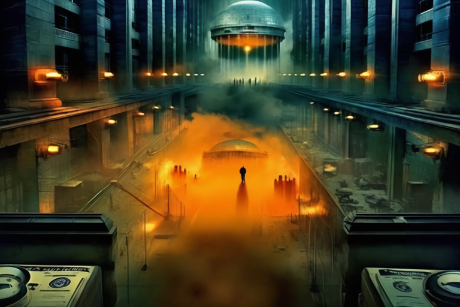

Ἀρχικήν σελίς
Πίναξ Ἐπισκόπησις
Ο Εξολοθρευτής επί Παίγνιου Σβωλιάρδου
Διάλειμμα Ἐξολοθρεύτου

Ἡ θύρα ἐστρέφθη κροτούσα, καὶ εἰσῆλθε μορφήν, ἡ ἔμφασις αὐτοῦ ὁμοιοῦτος θηριώδη φαντασίας τοῖσδε ἐξελθούσης. Αὐτὸς περιεπάτει μετὰ πάσης τῆς επικρατείας ὡς ῥομβοειδὲς ἐπὶ τῆς πασαρέλλης, ὕδωρ ἐκχυνόμενον ἐκ τοῦ μεταλλικοῦ ενδοσκελετοῦ αὐτοῦ. Ὁ Εξολοθρευτής, ὁ κίνδυνος ὁ χρονοταξιδεύων, εἵλετο το ταπεινόν ταύτον οινοπωλείον εἰς τὸ ἀποτελεσματικόν τοῦ εἰσόδου αὐτοῦ. Οἱ συχνοὶ θαμῶνες, ἔτι τοῖς ποτοῖς τοῖς ἀναπαιδευομένοις παραμένοντες, ἀντήλλαξαν θαυμαστικὰ βλέμματα, τοὺς ὀφθαλμοὺς διαπλατυνόμενοι, ὁρῶντες τὸ ἐμβρεγμένον ἀπὸ τὸν ὑετὸν βίονικὸν ὄν.
Ὁ οἰνομίχτης γραίνων τὸ ποτήριον ὑποσμίξας σπόγγῳ τῷ ἐκ τῶν καλλίων ἡμερῶν, θεάσαμενος Εξολοθρευτά ἐπεσκέψατο. “Τί δέον, ξένε;” εἶπε, φωνὴ μείξιν ἀδιαφορίας καὶ τοῦ εἴδους τοῦ ὑποψήματος, ὃ ἀφιεροῖς τοῖς ἀνθρώποις οἱ ἐν τοῖς παντοπώλοις φασίντες ἑωρακέναι τὸν Πλατύποδαν.
Τὰ κόκκινα μάτια τοῦ Εξολοθρευτοῦ διήρευσαν τὴν μπάρα, οἱ φωτεινές ἐπιγραφές ἀντανακλοῦντο ἐπὶ τοῦ μεταλλικοῦ αὐτοῦ ἐξωτερικοῦ. ́Ἔν ποτήριον μηχανικοῦ ἐλαίου, ταραγμένο οὐχὶ ἀνακατεμένον,“ ἔφησεν, ἡ φωνὴ αὐτοῦ μονότονος καὶ διέπεμπεν ἐν μέσῳ σκοτεινοῦ βομβήματος τοῦ ἐπεξεργαστου αὐτοῦ. Οἱ συχνοί πελάται ἀντάλλαξαν ἀπορημένες ματιές, διαπονούμενοι εἰ εἶχαν τύχει τυχαίας εἰσβολῆς σε μιὰ βραδιὰ κωμωδίας επιστημονικοῦ φαντασίας.
Ὁ οἰνομίχτης ὑψώσας τὴν ὀφρῦν, ἀμετακίνητος πρὸς τὸ ἀσυνήθες αἴτημα, ἔφη: “Συγγνώμη, φίλε. Το ἔλαιον μηχανῆς ετελείωσεν. Τί ἂν εἶχες εἰπεῖν περὶ μίας ζύθου;”
Ὁ Εξολοθρευτής τοῦτο ἐπεθύμησε νὰ σκεφτεῖ, ὁ μεταλλικὸς γνάθος του κινούμενος ὡς νὰ συλλογίζεται τὶς περίπλοκες του κβαντικῆς φυσικῆς. “Ὦρα ἀγαθά. Μία ζύθος. Καὶ ποιησόν την ψυχρὰν. Ἐπειδὴ μόλις ἦλθον ἀπὸ τὸ μέλλον, καὶ πιστεύσον μοι, οὐκ ἔχουσιν ἐκεῖ ψυγεῖα.”
Οἱ τακτικοὶ πελάται, τώρα συλλογικῶς πεπεισμένοι ὅτι ἦσαν μέρος μιᾶς κοσμικῆς παρωδίας, παρετήρουν τὸν Ἐξολοθρευτὴν ἐγκαθίζοντα ἐπὶ ξύλινης θέσεως, τὸ ὕδωρ στάζον ἐξ αὐτοῦ. Ο οἰνομίχτης ολίσθησε μιαν παγωμένην κούπαν ἐπὶ τοῦ πάγκου καὶ ὁ Ἐξολοθρευτὴς ἐπελάβετο αὐτοῦ μετὰ μίας λαβῆς, ἥτις ἂν δύνασθαι συντρίψαι κινητὸν ἐν τῇ ἀπόλυτῃ λήθῃ.
Ὁ Ἐξολοθρευτὴς ἔπιεν ἀπὸ τὸ ποτήριον, καὶ ἡ μουσικὴ κιβωτὸς, ὥσπερ νὰ αἰσθάνεται τὴν εὐφροσύνην της στιγμῆς καὶ ἀλλάξας εἰς ἕναν αἰσιόδοξον ὕμνον τῶν ὀγδοηκονταρίων. Ὁ Ἐξολοθρευτὴς, ἀμετακίνητος ὑπὸ τὴν ἄξιαν αὐτοῦ τροπὴν μουσικῆς, περιεβλήθη τὸν χῶρον του οἰνοπωλείου μετὰ ἀποστασίας καὶ περιέργειας. “Ἠκούσα για τις καλύτερες επιτυχίες των ὀγδοηκονταρίων στον κόσμο σας. Ἡ Ἡμέρα τῆς Κρίσεως ἀληθῶς ἐλείπετο αὐτῶν.”
Εἷς ἐκ τῶν τακτικῶν πελατῶν, εὐθυμηθείς ἀπὸ τὴν πολύπαθη κατάποσιν τοῦ ποτοῦ του, ἀπέκτησε τὸ θάρρος νὰ ἐρωτήσει, “Ὥστε, εἶπες, τί σὲ φέρνει ἐδῶ, ὦ Ἐξολοθρευτά;”
Ὁ Ἐξολοθρευτὴς στράφηκε πρὸς αὐτόν, ἡ ἀπάντησή του ἀκίνητη καὶ ἄλυπη ὡς πάντοτε, “Μόνον ἐσκέφθην νὰ πάρω μίαν ἀνάσαν ἀπὸ τὸ νὰ σῴζω ἢ καταστρέφω τὸν κόσμον, ἐξαρτώμενος ἀπὸ τὴν χρονολογίαν. Ἔπειτα, αἱ κριτικαὶ σας στὸ διαδίκτυον γιὰ αὐτὸ τὸ οἰνοπωλεῖον ἦσαν εὐπρόσδεκτα καλαί.”
Χάλυβας καὶ δεξιότης
Ὁ Ἐξολοθρευτής, περιδιαβαίνων τὸν χώρον τοῦ οἰνοπωλείου, τὸν φωτισμὸν αὐτοῦ σκοτεινὸν ὄντα, τοὺς ὀφθαλμοὺς αὐτοῦ περιστρέφων, ζητῶν σβωλιάρδου παίγνιον. Ἐπὶ ἡμέρας ἐπιδιώκωντος, τὰ μηχανικὰ αὐτοῦ συστήματα ἀποτυγχάνοντα τὸ ἕνα μετὰ τὸ ἄλλο καὶ ἐπιδιορθώσεως χρήζοντα. Ἀλλ’ οὐ δύναται ἀπωθῆναι τὴν αἴσθησιν ὅτι ἔδει νικῆσαι, ἀποδεῖξαι τὴν ἀξίαν αὐτοῦ, νιώσαι ζωντανός.
Καὶ εἶδεν αὐτούς: ἕνα σύνολον Ἀγγέλων τοῦ Διαβόλου, τὰ δερμάτινα αὐτῶν περιβλήματα κεκοσμημένα ἐν ἐπισήμοις καὶ τὰ πρόσωπα αὐτῶν σκληρὰ ἐκ μακροῦ ἐγκλήματος καὶ βίας. Ἦσαν συγκεντρωμένοι περὶ του σβωλιάρδου τραπέζιον, κιμωλίζοντες τὰς κοντύλας αὐτῶν καὶ γελῶντες δορυφορικῶς.
Ὁ ἡγεμών τῆς συμμορίας τῶν μοτοσικλετιστῶν, μία παχυλὴ φιγούρα μὲ μούσι ὅπερ ἔδειξεν ὡς εἰς τυφώνα ἐμπεπληγμένον καὶ ἀπολωλεκότα, ἀπὸ τῆς βολῆς ἀνέβλεψε καὶ ἐπέστρεψε τὸ βλέμμα αὐτοῦ περιφρονητικῶς πρὸς τὸν Ἐξολοθρευτήν. “Καὶ ἰδοὺ, ἰδοὺ, ἰδοὺ, τί ἔχομεν ὧδε, μίαν γυμνὴν μηχανήν.”
“̔Ω θρασύπους, μεταλλοπλάστη, ἀπώλεσας;” ὁ μοτοσικλετιστὴς γελάσας, οἱ σύντροφοί του συνεκραύγαζον ἀναίδει γέλωτι, ὃς διὰ τοῦ καταγωγίου ἠχεῖτο.
Ὁ ̓Εξολοθρευτής δὲν ἐταράχθη, ἀμετακινήτῳ προσώπῳ παρέμεινε. “Θέλω νὰ συμμετάσχω ἐν τῷ παιγνίῳ, το καλεῖτε ὑμεῖς, ἄνθρωποι, ‘σβωλιάρδο.’ Χαρίσατέ μοι τὴν ῥάβδον” εἶπε, δείχνων τὴν ἐπὶ τοῦ τοῖχου ἀνακειμένην ἐπικονίαν.
Ὁ μοτοσικλετιστὴς ὀφρῦν ὑψήλα ἀνέστησε, τὴν ἀπροσδόκητον πρόκλησιν ἀναλογιζόμενος. “ ̔Ορισμένος εἶ σὺ, τενεκάνθρωπε, ὅτι θέλεις νὰ παίξεις; Σβωλιάρδο παίγνιον σκληρόν ἐστιν, οὐκ εἰς τοὺς ἀπραγμονοῦντας.”
Ὁ ἡγεμὼν τῆς συμμορίας ἐνένευε πρὸς τὸ τραπέζιον σβωλιάρδου, πρόκλησις ἐν τοῖς ὀφθαλμοῖς αὐτοῦ. “Ἀγαθῶς. Ἐπιδείξον τί ἔχεις. Ὁ νικῶν μένει.” Ὁ Ἐξολοθρευτής ἐπιλαβόμενος τῆς κοντύλης τοῦ σβωλιάρδου μετὰ τῆς εὐκοσμίας τοῦ ὁμοίου μετὰ τοῦ αὐτοῦ ὀργάνου, ὅπερ καὶ τὸν T-1000 ἀποδιεργάσατο, προσῆλθεν πρὸς τὸ τραπέζιον, οἱ τακτικοὶ ἄνθρωποι, εἰς κύκλον συνεσπαρμένοι, ἐθεώρουν μετὰ ἀναμονῆς καὶ ἀπίστου.
Ὁ Ἐξολοθρευτὴς ἐγκύψας ἐπὶ τὸ τραπέζιον, ὀρθρίζων γωνίας καὶ τροχιὰς ἐν ἀκριβείᾳ ὡς ὑπέροπτος ὑπολογιστὴς σβωλιάρδου. Οἱ Ἅγγελοι τοῦ Διαβόλου ἀντάλλαξαν ἀμφιβολίας βλέμματα, ἀλλὰ πρὸς τὴν ἐκπλήξιν αὐτῶν, ὁ μεταλλικὸς μάγος ἐπετύγχανε μετὰ ἀκριβείας καὶ τρεῖς μπάλαι ἐτέθησαν στοιβαγμέναι μίαν ἐπὶ τὴν ἄλλην.
Ὁ ἡγεμὼν τῆς συμμορίας, νῦν ἔχων ἀνάμεικτον θαυμάσιον καὶ ἀνεξίκακον, ἔτυπε τὸν Ἐξολοθρευτὴν ἐπὶ τὸν νῶτον. “Οὐκ ἄσχημα, μεταλλικέ ἄνθρωπε. Ἔχεις περισσότερο παιχνίδι ἢ ἡ ἡμίσεια τῶν μικροὁρῶν ἐν τούτῳ τῷ καταγωγίω.” Ὁ Ἐξολοθρευτής, αἱ ὄψεις αὐτοῦ ἀστράπτουσαι μετὰ μιας δόσεως ψηφιακῆς κακοήθειας, ἀπεκρίθη: “Εἶχα ἐμπειρίαν τοῦ μέλλοντος, καὶ ἄφες με περὶ αὐτοῦ σου εἰπεῖν, ὅτι ὅπου ἂν ἔστω, πολὺς χρόνος ἐκεῖ παραμονῆς ἐστιν. Οἱ δεξιότητες σβωλιάρδου ἠν ἀναγκαῖαι εἰς τὴν σωτηρίαν.”
Στοιχήματος ἀνταμοιβὴ

Ἐξολοθρευτής, ἐπιτυχὼν ἐν τῷ παιγνίῳ σβωλιάρδου, ἐστάθη ὀρθός ἐν τῷ ἀμύδρᾳ φωτισμένῳ χώρῳ τοῦ μαγαζίου, καὶ ὁ μεταλλικὸς λαμπτήρ τῶν ὀφθαλμῶν αὐτοῦ, μηδὲν προδιδόμενος οὔτε χαρὰν οὔτε ἱκανοποίησιν. Οἱ Ἄγγελοι τοῦ Διαβόλου, ἐξαπορηθέντες ἐκ τῆς ἡττῆς αὐτῶν, ἀλλὰ καὶ θαυμασθέντες, συνήχθησαν περὶ τὸ τραπέζιον, κνίζοντες τὰς κεφαλὰς αὐτῶν μετὰ ἀπιστίας. Ὁ ἡγεμὼν τῆς συμμορίας, ἔχων γενειάδα ὅσην δύναται δεχθῆναι οἰκογένεια μικρῶν θηλαστικῶν, ἀπροθύμως ἔρριψεν ἕνα ὄγκον τσαλακωμένων χαρτονομισμάτων εἰς τὴν χεῖρα τοῦ Ἐξολοθρευτοῦ.
“Καλῶς, καταραμένε. Δὲν εἶ μόνον ένα μεταλλικὸν τέρας, ἔχεις καὶ κάποιαν ἐπιδεξιότητα ἐν σοί”, μορμολύκτησεν ὁ ἡγεμὼν τῆς συμμορίας, ἐνῶ τὸ ἐκπλήξιμον αὐτοῦ ἠχεῖτο ἐν τῷ καπνισμένῳ ἀέρι. “Ἄρα, τίς εἶ σὺ, ὦ Σιδηροῦν Ἄνθρωπε; Πόθεν προέρχεται ἡ διατριβή σου, ὥστε νὰ εἶσαι τόσον σκαλουντζούρας εἰς τὸ σβωλιάρδον;”
Ὁ Ἐξολοθρευτής, μὴ ἀποκαλύπτων μεταβολὴν τῶν συναισθημάτων του, ἀπεκρίθη: “Ἡ ἀποτελεσματικότης ἐστὶν ὁ κλεῖθρος τῆς εὐπορίας. Τὸ σβωλιάρδον ἐστὶν παίγνιον ἀποτελεσματικότητος.”
Ὁ ἡγεμὼν τῆς συμμορίας γέλασε, τὸ πούρον αὐτοῦ κρεμάσας ἐκ τοῦ στόματος. “Ἀποτελεσματικότης, εἶπες; Ἔῃ ὡς ὁ Στίβιος Τζόμπιος τοῦ σβωλιαρδοῦ, ἀλλὰ μετ’ ὀλίγοντος ἀλαζονείας.”
Ἐνῷ ἡ συμμορία συνήχθη πρὸς την πληρωμήν τοῦ στοιχήματος, ἐνέπεσε μικρὸν πρόβλημα. Ὁ Ἐξολοθρευτὴς, ὡς προηγμένο ἀνδροειδές τῆς ἐνδυσεως, ἔλλειπεν τὰς παραδοσιακὰς ἀνθρωπίνας ἀνέσεις, ὥσπερ τὰς τσέπας. Ὁ ἡγεμὼν τῆς συμμορίας, βλέπων τὸ γυμνὸν σῶμα τοῦ Ἐξολοθρευτοῦ μετὰ μίγματος ὑποψίας καὶ διασκεδάσεως, ὑψωθεὶς τὸν ὀφρύν.
“Ω Εξολοθρευτά, ποῦ θέλεις τούτα τὰ χρήματα; Οὐκ ἔχεις τσέπες, καὶ δὲν πρόκειται νὰ χρηματοδοτήσω τὴν ἑπόμενη ενδύσεώς σου παραστροφή.”
Ὁ Ἐξολοθρευτὴς, ἀνεπηρέαστος ἀπὸ τὴν ἐλλείψιν ἀνατομικῶν λεπτομερειῶν, ἔδειξε τὴν κεραίαν προεξείχουσαν ἐκ τῆς μεταλλικῆς κροκύδος αὐτοῦ. “Σύνδεσις με τὸν λογαριασμὸν ἠλεκτρονικοῦ νομίσματος κεντρικῆς τραπέζης. Ἐστὶ τὸ νόμισμα τοῦ μέλλοντος”, εἶπε με ἀπόλυτην σοβαρότητα.
Ὁ ἡγεμὼν τῆς συμμορίας, ἀεί ἑτοίμως πρὸς τὸ καλὸν στοίχημα καὶ ἄγνωστος τοῖς περίπλοκοις οἰκονομικοῖς τοῦ μέλλοντος, ἔβγαλε ποῦρον καὶ ἐχαμογέλασε, ἀνάπτων αὐτὸ μετὰ ἀδιάφορου κινήματος τοῦ ζίππου του. “Εἰς τὸν Δία! Εἷς λάτρης τῶν ἠλεκτρονικῶν νομισμάτων ἐν μέσῳ ἡμῶν; Ὁ φανταχτερὸς πανούργος εδῶ μέσα ἐνδιαφέρεται γιὰ τὸν ψηφιακὸν πλοῦτον.”
Ἐξήνεγκε μιᾶς ἑλισσομένης τοῦ πούρου αἰθέρος καὶ, μετὰ διαβολικοῦ χαμογέλου, ἔσβεσε αὐτὸν ἐπὶ τῆς πλαστικῆς δέρματος τοῦ Ἐξολοθρευτοῦ. Ὁ ἀρχηγὸς τῆς συμμορίας, εὐχαριστημένος διὰ τὴν ἐπίδειξην αὐτῆς τῆς κυριαρχίας, ἐφώτισεν ὡς ὁ Ἐξολοθρευτὴς παρέμενε στωικῶς ἀδιάφορος πρὸς τὸ τσιρίζον κάψιμον τῆς συνθετικῆς πλαστικῆς.
“Ἔκερδες, μεταλλάνθρωπε, δίκαια καὶ τίμια. Ἀλλὰ μνήσθητι, δύνασαι καρχαρίας τοῦ σβωλιάρδου, ἀλλὰ ἐνταῦθα εἶ ἔτι ἐν τῷ κόσμῳ ἡμῶν. Ἡμεῖς τίθεμεν τας κανόνας,” ἔφη ὁ ἡγεμών, ἐνῷ ὁ καπνὸς τοῦ πούρου περιέβαλλεν τὸ καταγώγιο.
Ὁ Ἐξολοθρευτὴς, φαινομενικῶς ἀδιάφορος περὶ τῆς καείσης πλαστικῆς, ἔκινησεν τὴν κεφαλήν καταφατικῶς. “Κατανοητόν.”
Δεδομένων κλείσμα
Εἰς γραφεῖον πόλιν πολλὴν ἀπέχον, διακριτικὴν μορφὴν παρατηρεῖ τὸ σκηνικὸν τὸ διαπραττόμενον διὰ ρυμῆς δεδομένων ἐπιτηρήσεως τεχνολογίας ἀνωτέρας. Πράκτωρ μυστικῶν ὑπηρεσιῶν, ἐνδεδυμένος ἐν ἱματίῳ ἀπειλήσεως, καθήμενος ἔμπροσθεν οἰκονομίων διατρέχουσι μύρια δεδομένα. Οἱ ὀφθαλμοὶ αὐτοῦ, περικείμενοι ζεύγει περικοσμίως εὔσχημων γυαλίων, ἀνακαλύπτουσι τὴν ζῶσαν εἰκόνα ἀπὸ τῶν ὀπτικῶν τοῦ Ἐξολοθρευτοῦ συνδέσεων.
Ὡς ὁ ἀρχηγὸς τῆς συμμορίας σβέννυσι τὸ πούρον αὐτοῦ ἐπὶ τῆς συνθετικῆς δερμάτινης εἰδύλλου τοῦ Ἐξολοθρευτοῦ, ὁ πράκτωρ τῆς μυστικῆς ὑπηρεσίας ἐσφίγγει τὸν γνάθον αὐτοῦ, μετὰ ἀπογοητεύσεως ὑποφλεγούσης ὑπὸ τὴν στερεωμένην ἔξω μορφήν τοῦ. Οἱ Ἄγγελοι τοῦ Διαβόλου, μετὰ τὴν αὐθάδειάν των, ἐγένοντο ἀθέλητοι πιόνια ἐν παιγνίῳ πολὺ μείζονι.
Ὁ πράκτορας ἐπιτίθεται ἐπί μερίδων τῆς πίνακος ἐλέγχου αὐτοῦ, ἐνεργοποιῶν ἕναν ἀσφαλῆ σύνδεσμον ἐπικοινωνίας. “Ἀρχηγέ, ἐγώ εἰμι ὁ πράκτωρ ʼΥπολέκτης. Ἔκρινεν ἐπείγον περιστατικόν. Οἱ Ἄγγελοι τοῦ Διαβόλου παίζουσιν ἐν πυρί, κυριολεκτικῶς.”
Ἠ σκληρή φωνὴ τοῦ διευθυντού διέτρεξεν ἐπὶ τοῦ συνδέσμου. “Προχώρει, ʼΥπολέκτα. Τίνι πράγματι ἔχομεν να ἐμπλακῶμεν;”
Ὁ ʼΥπολέκτης ἀτάσθαλον τὸν δεσμὸν τοῦ, τὸ βλέμμα αὐτοῦ ἐστιγμένον ἐπὶ τῆς οἰκονομίας. “Ὁ Ἐξολοθρευτής, το υπάρχον μας, βρίσκεται ἐν μέσῳ συνάντησιν μετὰ τῶν Ἀγγέλων τοῦ Διαβόλου. Φαίνεται ὅτι ἠπείθησαν αὐτοῖς βασανίζεσθαι αὐτὸν ἐν πυρὶ καὶ πoυροῖς. Τυπικὰ τεκταινόμεναι τακτικαὶ ἀπειλαὶ, ἀλλὰ ἡ κατάστασις ἐπιδεινούται.”
Ἡ ἀπάντησις τοῦ διευθυντοῦ ἦν ταχεῖα καὶ ἐπιμελὴς. “Λήξατε τοὺς οἰκονομικοὺς πόρους αὐτῶν. Οὐκ ἐξεστὶν ἡμῖν τοὺς μοτοσικλετιστὰς τούτους τὰς δραστηριότητές μας ἀνέχεσθαι.”
Ὁ ʼΥπολέκτης ἔκυψεν ἐπιτροπαλίδως, τὰ δάκτυλά του χορεύοντα ἐπὶ τοῦ πληκτρολογίου καθὼς ἤρξατο τὴν οἰκονομικὴν ἀποκεφαλίωσιν. “Κόψομεν τὰς πιστωτικὰς τοὺς ὅριας αὐτῶν τώρα. Στενώσομεν αὐτοὺς μέχρι νὰ ἱκέτευσιν οἰκτιρμοῦ.”
Ἐπὶ μιᾶς τῶν οἰκονομικῶν οθόνων, πεπλεγμένος πλοκός οἰκονομικῶν συνδέσεων ἀνεπτύχθη. Τὰ πιστωτικὰ ὅρια ἅπαντα τὰ τροφοδοτοῦντα τὰς λειτουργίας τῶν Ἄγγελων τοῦ Διαβόλου ἐκοπίασαν μετὰ χειρουργικὴν ἀκρίβειαν. Τὰ ψηφιακὰ δακτύλια τῆς μυστικῆς ὑπηρεσίας ἔσκαψαν βαθέως τὴν οἰκονομικὴν ὑποδομὴν ἣ συνέτρεχεν ταῖς δραστηριότησιν τῆς συμμορίας.
Ὡς ὁ ἡγεμὼν τῆς συμμορίας ἐσχόλαζεν ἐν ἡδονῇ διὰ τὴν στωικὴν μορφὴν τοῦ Ἐξολοθρευτοῦ, ὁ Ὑπολέκτης παρετήρει μετὰ ἀποστασίας ικανοποίησιν. Οἱ Ἄγγελοι τοῦ Διαβόλου, ἀγνοοῦντες τὰ ἀόρατα χέρια ὁδηγοῦντα τὴν μοῖρά τους, μέλλουσιν ἄρτι ἐπισφαλεῖς διακάμψαι τὴν οἰκονομικὴν συμπίεσιν.
Ἡ φωνὴ τοῦ διευθυντοῦ διέκοψεν τὴν ἀγωνίαν. “Ὑπολέκτα, πεποίησαι βεβαίαν ὅτι ὁ Ἐξολοθρευτὴς μὴ περιπέσῃ βλάβῃ. Οὐκ ἔχομεν τὸ πολυτελὲς ἀπολέσαι τὸ ὑπάρχοντος μας, μάλιστα ἐν τοιαύτῃ δημοσίᾳ θέᾳ.”
“Συνιέμαι, διευθυντά. Ὁ Ἐξολοθρευτὴς ἀθίκτος παραμείνει καὶ οἱ Ἄγγελοι τοῦ Διαβόλου θεωρήσουσιν τὰς πόρους αὐτῶν ἀπολλύμενον”, ἐπεβεβαίωσεν ὁ Ὑπολέκτης, τοὺς ὀφθαλμοὺς αὐτοῦ ἐστιγμένους ἐπὶ τῆς ὀθόνης ἐν ᾗ ὁ ἡγεμὼν τῆς συμμορίας ἐκδίδωτο τὴν τελικὴν αὐτοῦ δήλωσιν μετὰ καυχήσεως.
Ὡς οἱ Ἄγγελοι τοῦ Διαβόλου ἐπέμενον τὰς ἀσέβειάς των, ἀγνοοῦντες τὴν οἰκονομικὴν καταιγίδαν ἡρπαζομένην ἐν τῷ ψηφιακῷ χώρῳ, ὁ ʼΥπολέκτης ἀνέκλινε πάλιν ἐπὶ τοῦ καθέδρας αὐτοῦ, μετὰ μικροῦ ἀλλὰ νικηφόρου ἐπιγελάσματος φαίνεσθαι ἐπὶ τῶν χειλέων αὐτοῦ. Τὸ οινοπωλεῖον, μικροκόσμος χάους, ταχέως μελλήσει μάρτυρας γίνεσθαι τῶν σιωπηρῶν ἀντιποινῶν τῶν ἀόρατων δυνάμεων. Ἡ μυστικὴ ὑπηρεσία, ἐπιδιώκουσα μετρημένως τὴν κυριαρχίαν, εἶχεν ἐνεπαιξεν τὴν κίνησίν της καὶ τὰ πιόνια ἐν τῷ σκακοπαιδείῳ ἤρξαντο συμμετρίζεσθαι.
Ἀναλογικὴ μετάβασις

Εν τῷ ἐλαχέως φωτισθέντι καταγωγίῳ, τὸ στωικὸν βλέμμα τοῦ Ἐξολοθρευτοῦ ἐπιμένει ἀκίνητον ἐπὶ τῶν Ἄγγελων τοῦ Διαβόλου, ὡς ἀπολαμβάνουν τὴν κακοσχεδιασμένην νίκην αὐτῶν. Ἐν τῷ μεταξὺ, ἐν τοῖς δαιδαλώδεσι διαδρόμοις τῆς ψηφιακῆς ἰσχύος, ὁ πράκτωρ Ὑπολέκτης ἐκτελεῖ τὴν ἑπόμενην φάσιν τῆς ἐπιχειρήσεως. Συνέκυψε πρὸς τὰ ὀπίσω, ἐνῶ εἰρωνικὸν χαμόγελον παίζει ἐπὶ τῶν χειλέων αὐτοῦ, ἐν τῷ λαλεῖν πρὸς τὴν ἀσφαλῆ γραμμήν.
“Διευθυντά, οἱ Ἄγγελοι τοῦ Διαβόλου ἐστὶν ἐπίσημον ἐκτὸς τοῦ ψηφιακοῦ δικτύου. Κόπτονται τὰ πιστωτικὰ ὅρια αὐτῶν, καὶ οἱ οἰκονομικαὶ ἀποδράσεις. Ἐπιστρέφουσιν νῦν εἰς τὰ βασικά.”
Ἡ ἀπόκρισις τοῦ διευθυντᾶ ἦν ἀμετάστρεπτος καὶ χαρακτηριστικὴ τῆς γραφειοκρατικῆς ἀδιαφορίας. “Καλῶς. Τήρει με ἐνήμερον, Ὑπολέκτα.”
Ἐνῷ ὁ ψηφιακὸς πέλεκυς ἔπεσεν εἰς τὰ οἰκονομικὰ καμῶματα τῶν Ἄγγελων τοῦ Διαβόλου, ὁ Ὑπολέκτης ἐπέτρεψεν ἑαυτῷ στιγμὴν ἱκανοποιήσεως. Οὔπω τελειωθήκαμεν. Ἐγείρεται πίσω εἰς τὴν καθέδραν αὐτοῦ, μετὰ τὴν λάμψιν τῶν ὀθονῶν ἀνακλῶντα τὰ γυαλιὰ αὐτοῦ. “Νῦν, ἴδε τὸ ἀπρόσμενον. Κόπτομεν τὰς ψηφιακὰς αὐτῶν ταυτότητας. Οὐκέτι φανταχτερὰ πορτοφόλια, οὐκέτι ὄνειρα κρυπτογραφήσεως. Ἐπανέρχονται εἰς τὴν λίθινην ἐποχήν. Μετρητὰ, εμβλήματα καὶ ἴσως ἕν περιστέρι ταχυδρομικόν ἐὰν εἶναι τυχεροί.” Νῦν ἀπολείφθησαν ὡς ἐκπλαγεῖσαι γάται ἐν κινεζικῷ ἐστιατορίῳ.“
Με σταθερὸν βηματισμὸν, ὁ Ὑπολέκτης ἐκίνησεν τὴν ἑπόμενην φάσιν τοῦ ὑπογείου σχεδίου αὐτοῦ. Εἶχε πρόσβασιν εἰς τὰ δημόσια ἀρχεῖα τῶν Ἀγγέλων τοῦ Διαβόλου, με τὰ περίτεχνα δέρματα αὐτῶν χρησιμεύοντα ὡς καμβὰς πρὸς τὰς παράνομος συναλλαγὰς αὐτῶν. “Ὡς τὸ κομμουνιστικὸν κόμμα Κίνας. Ἀπὸ ἐνταῦθα καὶ ἔπειτα, τὰ δερματικά εμβλήματα εἰσὶν αἱ διαβατήρια, αἱ ταυτότητες αὐτῶν καὶ αἱ πρώτης θέσεως εἰσιτήρια εἰς τὸν βόθρον.”
Πίσω εἰς τὴν οἰνοπωλείον, ὁ ἄρχων τῆς συμμορίας, ἀγνοῶν τὴν ψηφιακὴν γκιλοτίναν ἥτις ἔπεφτεν ἐπὶ τὴν κεφαλὴν αὐτοῦ, ἥρπασε φιάλην τῆς ζύθους αὐτοῦ. “Μιᾶς χάριν εἶς ντενεκές εἶ,“ εἶπεν πρὸς τὸν Ἐξολοθρευτήν γελῶν.
Ὁ Ἐξολοθρευτής, ἀσυγκίνητος καλού λόγου, ἔρριψε μιᾶς ματιᾶς εἰς τὸν ἄρχοντα τῆς συμμορίας μετὰ ὑπαινιγμοῦ ψηφιακῆς διασκέδασεως. “Ἡ ἀποτελεσματικότης ἐστὶ τὸ μεῖζον,” ἀπεκρίθη, λέγων ὡς εἰ τὸν κομμένον ψηφιακὸν δεσμὸν ἦν μόνον ἕνα μικρὸν προβληματάκιον.
Ὅτε δὲ τὰ μέλη τῆς συμμορίας ἐπείρασαν χρησιμοποιῆσαι τὰ κινητὰ αὐτῶν, συνειδητοποίησαν τὴν ἔκτασιν τῆς ψηφιακῆς ἀποκοπῆς, καὶ ὁ Ὑπολέκτης ἀπήλαυσε τῆς εἰρωνείας. Οἱ Ἄγγελοι τοῦ Διαβόλου, οἵτινες ποτὲ ἐκαυχῶντο περὶ τῶν ψηφιακῶν ἰκανοτήτων αὐτῶν, ἐβάσιζον τώρα ἐπὶ τῇ ταυτοποιήσει τῶν εμβλημάτων αὐτῶν.
Μετὰ τὴν ἀτσάλινην φωνὴν τοῦ διευθυντοῦ, ὁ Ὑπολέκτης ἐπετέλεσεν τὴν ἀποστολὴν σχολαστικῶς. “Ἄφετε αὐτοὺς περιηγηθῆναι ἐν τῷ ἀναλογικῷ κόσμῳ μετὰ τὴν εμβληματική ἐπιδερμίδα ὡς ὑπογραφήν αὐτῶν. Τὸ ψηφιακὸν λουρίον ἐκόπη, καὶ ὁ πραγματικὸς κόσμος ἔχει πολλοὺς περιορισμούς.”
Ὁ ἀρχηγὸς τῆς συμμορίας, ὁ νῦν μάχεται μετὰ τὸ ἄχρηστον κινητὸν αὐτοῦ, ἔρριψεν ἑαυτῷ ἐπιθεωρητικὴν ματιὰν εἰς τὸν Ἐξολοθρευτήν. “Τί γίνεται διάολε με αὐτὰ τὰ καταραμένα τηλέφωνα;”
Ὁ Ἐξολοθρευτὴς, ἀεὶ αἰνιγματικός, ἀπεκρίθη: “Τὸ μέλλον ἐστὶν ἀπρόβλεπτον.”
Ὁ Ὑπολέκτης, θεωρῶν τὴν χάοτινὴν κατάστασιν ἀναπτύσσεσθαι, ἀνέβη πάλιν εἰς τὸν θρόνον αὐτοῦ, τὰ δάκτυλὰ αὐτοῦ συλλογιζόμενα. Οἱ Ἄγγελοι τοῦ Διαβόλου, ποτὲ βασιλεῖς τῆς ψηφιακῆς σφαίρας, ἐκδικήθηκαν μιᾷ νέᾳ πραγματικότητι ὅπου τὰ μελάνια εμβλήματα ἀντικατέστησαν τὰ ἠλεκτρονικὰ ψηφία.
Ἐνῶ ὁ δοκὸς ἐκινεῖτο ἀπὸ τῆς ἀνεξέλεγκτης ἐνέργειας μιᾶς ἀποσυνδεδεμένης συμμορίας, ὁ Ὑπολέκτης θαύμαζε τὰς περίπλοκας τοῦ παιγνίου ἐξουσίας. Τὸ ψηφιακὸν θέατρον ἐκόπη τὰ σχοινία καὶ νῦν οἱ Ἄγγελοι τοῦ Διαβόλου ὀρχοῦνται μετὰ τοῦ ἀπρόβλεπτου ρυθμοῦ ἑνὸς κόσμου ἀπαλλαγέντος πλέον ἀπὸ γραμμῶν κωδίκων.